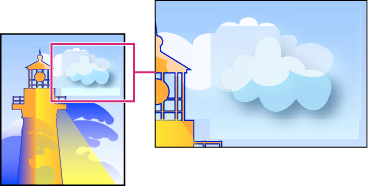

Transparency Flattener options
You can set Transparency Flattener options when creating, editing, or previewing flattener presets in Illustrator, InDesign, or Acrobat.
 Highlight (preview) options
Highlight (preview) options
- None (Color Preview)
- Disables previewing.
- Rasterized Complex Regions
- Highlights the areas that will be rasterized for performance reasons (as determined by the Rasters/Vectors slider). Keep in mind that the boundary of the highlight area has a higher probability of producing stitching problems (depending on the print-driver settings and the rasterization resolution). To minimize stitching problems, select Clip Complex Regions.
- Transparent Objects
- Highlights the objects that are sources of transparency, such as objects with partial opacity (including images with alpha channels), objects with blending modes, and objects with opacity masks. In addition, note that styles and effects may contain transparency, and overprinted objects may be treated as sources of transparency if they are involved in transparency or if the overprint needs to be flattened.
- All Affected Objects
- Highlights all objects that are involved in transparency, including transparent objects and objects that are overlapped by transparent objects. The highlighted objects will be affected by the flattening process—their strokes or patterns will be expanded, portions of them may get rasterized, and so on.
- Affected Linked EPS Files (Illustrator only)
- Highlights all linked EPS files that are affected by transparency.
- Affected Graphics (InDesign only)
- Highlights all placed content affected by transparency or transparency effects. This option is useful for service providers who need to see graphics that require attention to print properly.
- Expanded Patterns (Illustrator and Acrobat)
- Highlights all patterns that will be expanded if involved in transparency.
- Outlined Strokes
- Highlights all strokes that will be outlined if involved in transparency or because Convert All Strokes To Outlines is selected.
- Outlined Text (Illustrator and InDesign)
-
Highlights all text that will be outlined if involved in
transparency or because Convert All Text To Outlines is selected.
Note: In the final output, outlined strokes and text may appear slightly different from native ones, especially very thin strokes and very small text. However, the Flattener Preview doesn’t highlight this altered appearance.
- Raster-Fill Text And Strokes (InDesign only)
- Highlights text and strokes that have rasterized fills as a result of flattening.
- All Rasterized Regions (Illustrator and InDesign)
- Highlights objects and intersections of objects that will be rasterized because there is no other way of representing them in PostScript or because they are more complex than the threshold specified by the Rasters/Vectors slider. For example, the intersection of two transparent gradients will always be rasterized, even if the Rasters/Vectors value is 100. The All Rasterized Regions option also shows raster graphics (such as Photoshop files) involved in transparency, and raster effects such as drop shadows and feathers. Note that this option takes longer to process than the others.
Transparency Flattener Preset options
- Name/Preset
- Specifies the name of the preset. Depending on the dialog box, you can type a name in the Name text box or accept the default. You can enter the name of an existing preset to edit that preset. However, you can’t edit the default presets.
- Raster/Vector balance
-
Specifies the amount of vector information that will be preserved.
Higher settings preserve more vector objects, while lower settings rasterize
more vector objects; intermediate settings preserve simple areas
in vector form and rasterize complex ones. Select the lowest setting
to rasterize all the artwork.
Note: The amount of rasterization that occurs depends on the complexity of the page and the types of overlapping objects.
- Line Art And Text Resolution
- Rasterizes all objects, including images, vector artwork, text, and gradients, to the specified resolution. Acrobat and InDesign allow a maximum of 9600 pixels per inch (ppi) for line art, and 1200 ppi for gradient mesh. Illustrator allows a maximum of 9600 ppi for both line art and gradient mesh. The resolution affects the precision of intersections when flattened. Line Art and Text Resolution should generally be set to 600‑1200 to provide high-quality rasterization, especially on serif or small point sized type.
- Gradient And Mesh Resolution
- Specifies the resolution for gradients and Illustrator mesh objects rasterized as a result of flattening, from 72 to 2400 ppi. The resolution affects the precision of intersections when flattened. Gradient and mesh resolution should generally be set between 150 and 300 ppi, because the quality of the gradients, drop shadows, and feathers do not improve with higher resolutions, but printing time and file size increase.
- Convert All Text To Outlines
- Converts all type objects (point type, area type, and path type) to outlines and discards all type glyph information on pages containing transparency. This option ensures that the width of text stays consistent during flattening. Note that enabling this option will cause small fonts to appear slightly thicker when viewed in Acrobat or printed on low-resolution desktop printers. It doesn’t affect the quality of the type printed on high-resolution printers or imagesetters.
- Convert All Strokes To Outlines
- Converts all strokes to simple filled paths on pages containing transparency. This option ensures that the width of strokes stays consistent during flattening. Note that enabling this option causes thin strokes to appear slightly thicker and may degrade flattening performance.
- Clip Complex Regions
-
Ensures that the boundaries between vector artwork and rasterized
artwork fall along object paths. This option reduces stitching artifacts
that result when part of an object is rasterized while another part
of the object remains in vector form. However, selecting this option
may result in paths that are too complex for the printer to handle.

Stitching, where rasters and vectors meet.
Note: Some print drivers process raster and vector art differently, sometimes resulting in color stitching. You may be able to minimize stitching problems by disabling some print-driver specific color-management settings. These settings vary with each printer, so see the documentation that came with your printer for details. - (Illustrator only) Select Preserve Alpha Transparency (Flatten Transparency dialog box only)
- Preserves the overall opacity of flattened objects. With this option, blending modes and overprints are lost, but their appearance is retained within the processed artwork, along with the level of alpha transparency (as when you rasterize artwork using a transparent background). Preserve Alpha Transparency can be useful if you are exporting to SWF or SVG, since both of these formats support alpha transparency.
- (Illustrator only) Select Preserve Spot Colors And Overprints (Flatten Transparency dialog box only)
- Generally preserves spot colors. It also preserves overprinting for objects that aren’t involved in transparency. Select this option when printing separations if the document contains spot colors and overprinted objects. Deselect this option when saving files for use in page-layout applications. With this option selected, overprinted areas that interact with transparency are flattened, while overprinting in other areas is preserved. The results are unpredictable when the file is output from a page-layout application.
- Preserve Overprint (Acrobat only)
- Blends the color of transparent artwork with the background color to create an overprint effect.